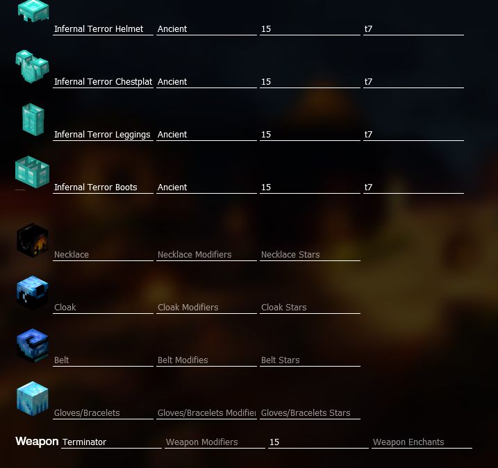
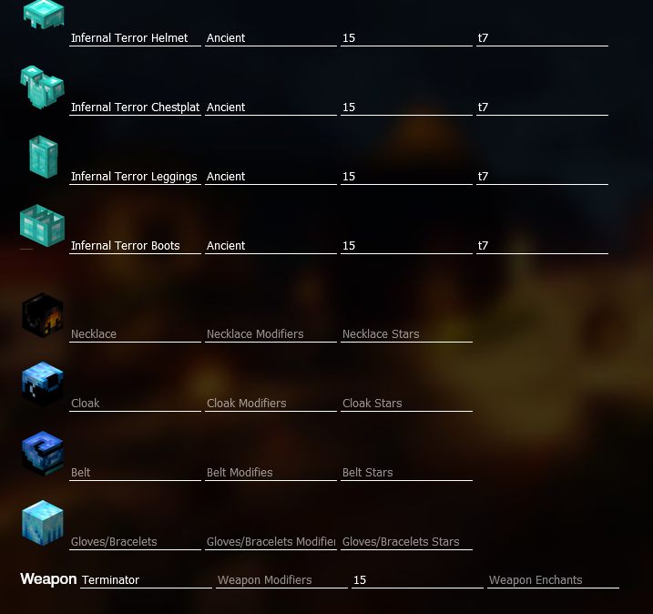

that looks like this.

I will break down every UI element in this website.

Welcome to the official guide for SkyBuilder!
When entering the site, you will be met with a (probably) confusing interface
that looks like this.
I will break down every UI element in this website.

On the left side of the screen, you will see something that looks like this. This is where you input your Armor and Equipment.
There are 3 categories.
The first is Armor. The "Helmet", "Chestplate", "Leggings", and
"Boots" is where you type in the name of your armor, like "Infernal Terror Helmet." Note that this changing this will automatically
update your stats, so you do not have to worry.